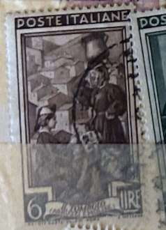
| SOURCE | TITLE| IMAGE MATCH | click to source page |
| eBay | Poste Italiane Foreign 6 Lire Stamp Used - #A192 | eBay | 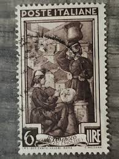 |
| eBay | Poste Italiane Foreign 6 Lire Stamp Used - #A192 | eBay | 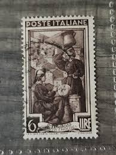 |
| eBay | Italy Stamp - 1950 1L Italy Working Cancelled (FBX) | eBay | 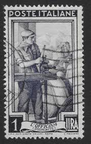 |
| Find Your Stamps Value | Value of poste vaticane anno santo mcml l6 stamps | 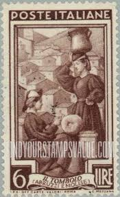 |
| Dreamstime.com | Italy Women 1950 Stock Photos - Free & Royalty-Free Stock Photos from Dreamstime | 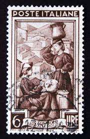 |
| Dreamstime.com | Lace making editorial stock photo. Image of fabric, work - 37783343 | 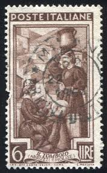 |
| Dreamstime.com | Postage Stamp Italy, 1950, Lace Maker and Water Carrier, Scanno Abruzzo Editorial Stock Photo - Image of 1950, isolated: 206387843 | 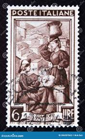 |
| Cherrystone Auctions | Rare Stamps & Postal History of the World - January 14-15, 2020 - ITALY TRIESTE - ZONE A | 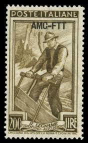 |
| HipStamp | Italy Stamp: Very Old antique used Stamp set #4 Rare- very hard to find. | Europe - Italy, General Issue Stamp / HipStamp | 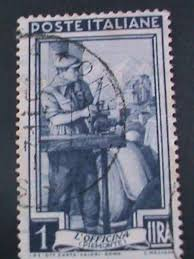 |
| iStock | Italian Postage Stamp Il Tombolo Stock Photo - Download Image Now - Abruzzo, Postage Stamp, 1950-1959 - iStock | 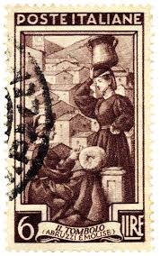 |
| Todocolección | italia- 1950- yvert tellier 573 - Buy Antique stamps of Italy on todocoleccion | 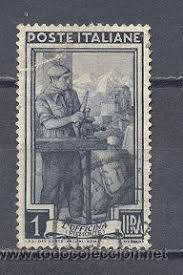 |
| sellosmundo.com | ITALIAN POST. Italy Europe ref. 170308 | 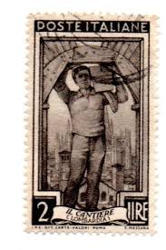 |
| Shutterstock | 7+ Thousand Old Italian Stamp Royalty-Free Images, Stock Photos & Pictures | Shutterstock | 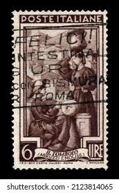 |
| CollectorBazar | a2zKollection ~ Italy Old Issue 1947 - 1950 Worker Used Stamp # 127/F/116/SD | 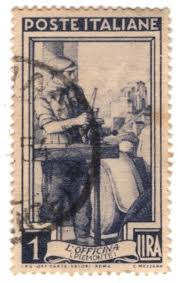 |
| eBay UK | Mint Hinged George VI (1936-1952) Italian Stamps for sale | eBay UK | 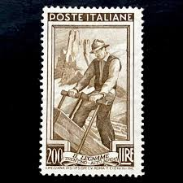 |
| Old-Stamps.com | Poste Italiane - Il Tombolo (Abruzzi E / Italia | 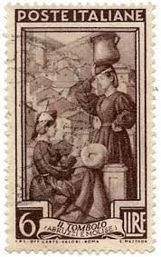 |
| Dreamstime.com | Provincial Occupations Stock Photos - Free & Royalty-Free Stock Photos from Dreamstime | 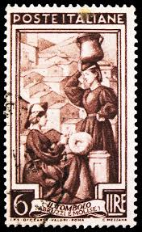 |
| iStock | Italian Postage Stamp Stock Photo - Download Image Now - Italy, Postage Stamp, Above - iStock | 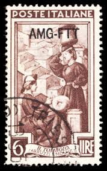 |
| Dreamstime.com | Italian Men 1950 Stock Photos - Free & Royalty-Free Stock Photos from Dreamstime | 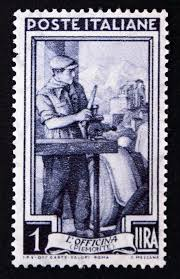 |
| Shutterstock | Italy Circa 1949 Stamp Printed Italy Stock Photo 64370662 | Shutterstock | 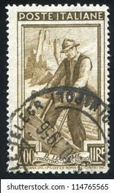 |
| lastdodo.com | Trento Cionini [1919-2005] Stamp catalogue - LastDodo | 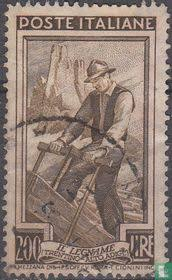 |
| PicClick UK | 1968 POSTE ITALIANE 55 Lire Stamp + Postcard £3.74 - PicClick UK | 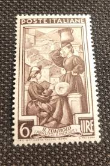 |
| Etsy | Italy at Work Stamp Series 1950 to 1958 Star and Winged Wheel Watermark - Etsy Hong Kong | 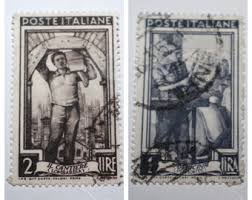 |
| iStock | Italian Postage Stamp Stock Photo - Download Image Now - Antique, Black Background, Black Color - iStock | 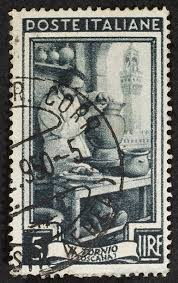 |
| Redbubble | Theodore Chasseriau La Petra Camara 1854 Painting Stamp" Poster for Sale by StampCollection | Redbubble | 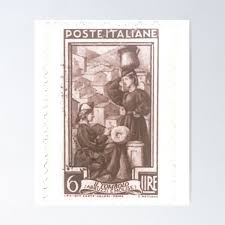 |
| Alamy | Circa 1950 stamp hi-res stock photography and images - Page 3 - Alamy | 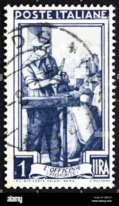 |
| Shutterstock | 3+ Thousand 1950 Stamp Royalty-Free Images, Stock Photos & Pictures | Shutterstock | 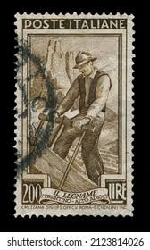 |
| Stamp Community Forum | Are There Any Stamps With A Masonry Theme - Stamp Community Forum | 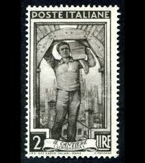 |
| Shutterstock | 86+ Thousand Poste Italiane 2 Lire 1929 Definitives Serie Imperiale Royalty-Free Images, Stock Photos & Pictures | Shutterstock | 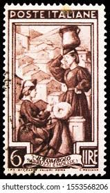 |
| Todocolección | sello usado. castillos. castello dell¨imperator - Buy Antique stamps of Italy on todocoleccion | 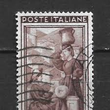 |
| casualphilatelist.com | Stamp enthusiast | Casual Philatelist | 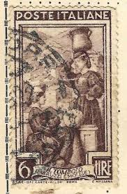 |
| Flickr | Pagina fan Facebook scanno-un borgo nrl cuore dell'abruzzo… | Flickr | 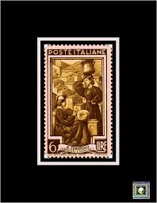 |
| PICRYL | 4 Knyppling Images: PICRYL - Public Domain Media Search Engine Public Domain Search | 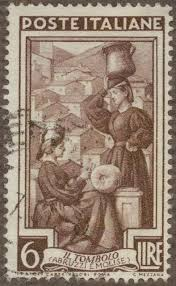 |
| Buon lunedì a tutti. Spero che abbiate passato tutti un fantastico weekend. Today's Stamp of the Day is this 1.25£ Lira special delivery stamp from Italy. Issued in 1944 the image is | 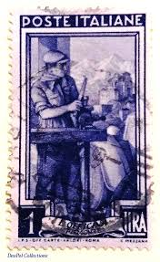 | |
| LOT-ART | Triest - Zone A 1950 - Trieste A 200 lire Italy at work 14 1/4 x 13 1/4 - Sassone N. 107/II in Italy | 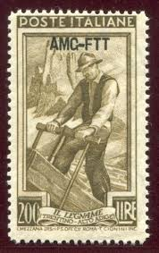 |
| PicClick IT | FRANCOBOLLO RARO 1 Lira, Italia al Lavoro 1950, Usato, Officina Piemonte EUR 600,00 - PicClick IT | 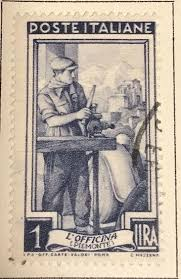 |
| Dreamstime.com | Seal Stamp Horseshoe Stock Photos - Free & Royalty-Free Stock Photos from Dreamstime | 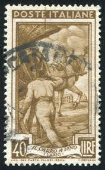 |
| Alamy | ITALY - CIRCA 1950: stamp printed by Italy, shows Composite of Italian Cathedrals and Churches, circa 1950 Stock Photo - Alamy | 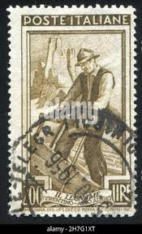 |
| Mezzo Secolo di Repubblica | Italy at work Series – Half a Century of Italian Republic | 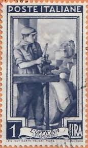 |
| makkaconstructions.com.au | Francobolli Tema Trasporti Collezione 50 Francobolli Ferrovie - Per Appassionati Filatelici Francobolli Tematici Treni | 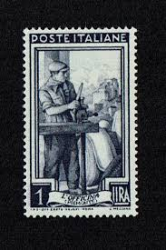 |
| On the Ridge Stamps | Classic Stamps - Italy 1950 Sc 566 MLH* perf 14x13 some gum crazing - On the Ridge Stamps | 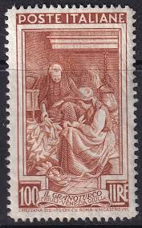 |
| Dreamstime.com | Milan, Lombardy Italy - November 23 , 2018 - BMW 300 Jetta at Autoclassica Milano 2018 Edition Editorial Photography - Image of design, november: 132402902 | 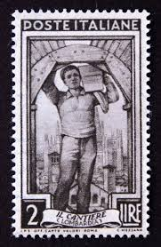 |
| Todocolección | sello poste italiane, victor emmanuelle 50 cent - Buy Antique stamps of Italy on todocoleccion | 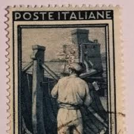 |
| ebid.net | Australia 1937 SG189 aus5 Merino Ram 5d Used Stamp on eBid United Kingdom | 177791173 | 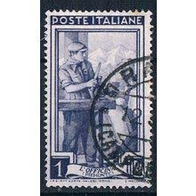 |
| Mezzo Secolo di Repubblica | Série « L'Italie au Travail » – Un demi siècle de République italienne | 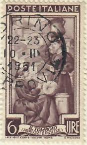 |
| Shutterstock | 7+ Thousand Italian Postage Stamp Royalty-Free Images, Stock Photos & Pictures | Shutterstock | 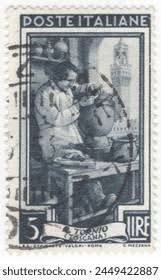 |
| Casual Philatelist (@casualphilatelist) • Instagram photos and videos | 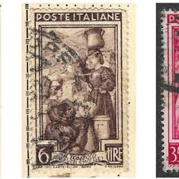 | |
| Milanuncios | Milanuncios - * Italia – oficios femeninos | 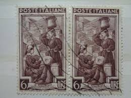 |
| eBay | Poste Italiane Il Tornio 5 Lire - Stamp / Italy 1950 Used NH | eBay | 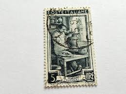 |
| Shutterstock | Italien Siegel: Over 3,871 Royalty-Free Licensable Stock Photos | Shutterstock | |
| Linns Stamp News | 1950-58 Italy at Work series: timeless stamps honor ceaseless toil | |
| 2-clicks-stamps.com | 50+ Best Italian Stamps | 2-Clicks Stamps | |
| HipStamp | Italy 566 - Used - 100L Husking Corn (1950) (2) | Europe - Italy, General Issue Stamp / HipStamp | |
| Zoë Boccabella | Messages… | Zoë Boccabella | |
| Mezzo Secolo di Repubblica | Italia al Lavoro – Mezzo Secolo di Repubblica | |
| Blogger.com | Heritage of India stamps site: Italy stamps collection | |
| Todocolección | italia ivert nº 1347, victor emmanuel ii, rey d - Buy Antique stamps of Italy on todocoleccion | |
| Mowbray Collectables | The Auction Catalogue | Mowbray Collectables | |
| Alamy | Free territory of trieste hi-res stock photography and images - Alamy |